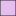
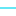
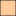

<!doctype html>
<html lang="en">
    <head>
        <meta charset="utf-8">
        <meta http-equiv="X-UA-Compatible" content="IE=edge">
        <meta name="viewport" content="initial-scale=1,user-scalable=no,maximum-scale=1,width=device-width">
        <meta name="mobile-web-app-capable" content="yes">
        <meta name="apple-mobile-web-app-capable" content="yes">
        <link rel="stylesheet" href="css/leaflet.css">
        <link rel="stylesheet" href="css/qgis2web.css"><link rel="stylesheet" href="css/fontawesome-all.min.css">
        <link rel="stylesheet" href="css/leaflet-measure.css">
        <style>
        html, body, #map {
            width: 100%;
            height: 100%;
            padding: 0;
            margin: 0;
        }
        </style>
        <title>CUENCA MORELIA</title>
    </head>
    <body>
        <div id="map">
        </div>
        <script src="js/qgis2web_expressions.js"></script>
        <script src="js/leaflet.js"></script>
        <script src="js/multi-style-layer.js"></script>
        <script src="js/leaflet-svg-shape-markers.min.js"></script>
        <script src="js/leaflet.rotatedMarker.js"></script>
        <script src="js/leaflet.pattern.js"></script>
        <script src="js/leaflet-hash.js"></script>
        <script src="js/Autolinker.min.js"></script>
        <script src="js/rbush.min.js"></script>
        <script src="js/labelgun.min.js"></script>
        <script src="js/labels.js"></script>
        <script src="js/leaflet-measure.js"></script>
        <script src="data/MORELIA_1.js"></script>
        <script src="data/CORRIENTES_M_2.js"></script>
        <script src="data/CUENCAMORELIA_3.js"></script>
        <script src="data/PUNTODESALIDA_4.js"></script>
        <script>
        var map = L.map('map', {
            zoomControl:true, maxZoom:28, minZoom:1
        }).fitBounds([[19.54104371130482,-101.5589350556058],[19.8657928074903,-101.07337326110034]]);
        var hash = new L.Hash(map);
        map.attributionControl.setPrefix('<a href="https://github.com/tomchadwin/qgis2web" target="_blank">qgis2web</a> &middot; <a href="https://leafletjs.com" title="A JS library for interactive maps">Leaflet</a> &middot; <a href="https://qgis.org">QGIS</a>');
        var autolinker = new Autolinker({truncate: {length: 30, location: 'smart'}});
        var measureControl = new L.Control.Measure({
            position: 'topleft',
            primaryLengthUnit: 'meters',
            secondaryLengthUnit: 'kilometers',
            primaryAreaUnit: 'sqmeters',
            secondaryAreaUnit: 'hectares'
        });
        measureControl.addTo(map);
        document.getElementsByClassName('leaflet-control-measure-toggle')[0]
        .innerHTML = '';
        document.getElementsByClassName('leaflet-control-measure-toggle')[0]
        .className += ' fas fa-ruler';
        var bounds_group = new L.featureGroup([]);
        function setBounds() {
        }
        map.createPane('pane_SATELITAL_0');
        map.getPane('pane_SATELITAL_0').style.zIndex = 400;
        var layer_SATELITAL_0 = L.tileLayer('http://www.google.cn/maps/vt?lyrs=s@189&gl=cn&x={x}&y={y}&z={z}', {
            pane: 'pane_SATELITAL_0',
            opacity: 1.0,
            attribution: '',
            minZoom: 1,
            maxZoom: 28,
            minNativeZoom: 0,
            maxNativeZoom: 18
        });
        layer_SATELITAL_0;
        map.addLayer(layer_SATELITAL_0);
        function pop_MORELIA_1(feature, layer) {
            var popupContent = '<table>\
                    <tr>\
                        <th scope="row">CVEGEO</th>\
                        <td>' + (feature.properties['CVEGEO'] !== null ? autolinker.link(feature.properties['CVEGEO'].toLocaleString()) : '') + '</td>\
                    </tr>\
                    <tr>\
                        <th scope="row">CVE_AGEB</th>\
                        <td>' + (feature.properties['CVE_AGEB'] !== null ? autolinker.link(feature.properties['CVE_AGEB'].toLocaleString()) : '') + '</td>\
                    </tr>\
                    <tr>\
                        <th scope="row">CVE_MZA</th>\
                        <td>' + (feature.properties['CVE_MZA'] !== null ? autolinker.link(feature.properties['CVE_MZA'].toLocaleString()) : '') + '</td>\
                    </tr>\
                    <tr>\
                        <th scope="row">AMBITO</th>\
                        <td>' + (feature.properties['AMBITO'] !== null ? autolinker.link(feature.properties['AMBITO'].toLocaleString()) : '') + '</td>\
                    </tr>\
                    <tr>\
                        <th scope="row">TIPOMZA</th>\
                        <td>' + (feature.properties['TIPOMZA'] !== null ? autolinker.link(feature.properties['TIPOMZA'].toLocaleString()) : '') + '</td>\
                    </tr>\
                    <tr>\
                        <th scope="row">AREA</th>\
                        <td>' + (feature.properties['AREA'] !== null ? autolinker.link(feature.properties['AREA'].toLocaleString()) : '') + '</td>\
                    </tr>\
                    <tr>\
                        <th scope="row">PERIMETRO</th>\
                        <td>' + (feature.properties['PERIMETRO'] !== null ? autolinker.link(feature.properties['PERIMETRO'].toLocaleString()) : '') + '</td>\
                    </tr>\
                </table>';
            layer.bindPopup(popupContent, {maxHeight: 400});
        }

        function style_MORELIA_1_0() {
            return {
                pane: 'pane_MORELIA_1',
                opacity: 1,
                color: 'rgba(35,35,35,1.0)',
                dashArray: '',
                lineCap: 'butt',
                lineJoin: 'miter',
                weight: 1.0, 
                fill: true,
                fillOpacity: 1,
                fillColor: 'rgba(255,127,0,0.4)',
                interactive: true,
            }
        }
        map.createPane('pane_MORELIA_1');
        map.getPane('pane_MORELIA_1').style.zIndex = 401;
        map.getPane('pane_MORELIA_1').style['mix-blend-mode'] = 'normal';
        var layer_MORELIA_1 = new L.geoJson(json_MORELIA_1, {
            attribution: '',
            interactive: true,
            dataVar: 'json_MORELIA_1',
            layerName: 'layer_MORELIA_1',
            pane: 'pane_MORELIA_1',
            onEachFeature: pop_MORELIA_1,
            style: style_MORELIA_1_0,
        });
        bounds_group.addLayer(layer_MORELIA_1);
        map.addLayer(layer_MORELIA_1);
        function pop_CORRIENTES_M_2(feature, layer) {
            var popupContent = '<table>\
                    <tr>\
                        <th scope="row">CONDICION</th>\
                        <td>' + (feature.properties['CONDICION'] !== null ? autolinker.link(feature.properties['CONDICION'].toLocaleString()) : '') + '</td>\
                    </tr>\
                    <tr>\
                        <th scope="row">LENGTHM</th>\
                        <td>' + (feature.properties['LENGTHM'] !== null ? autolinker.link(feature.properties['LENGTHM'].toLocaleString()) : '') + '</td>\
                    </tr>\
                </table>';
            layer.bindPopup(popupContent, {maxHeight: 400});
        }

        function style_CORRIENTES_M_2_0() {
            return {
                pane: 'pane_CORRIENTES_M_2',
                opacity: 1,
                color: 'rgba(20,219,241,1.0)',
                dashArray: '',
                lineCap: 'square',
                lineJoin: 'bevel',
                weight: 1.0,
                fillOpacity: 0,
                interactive: true,
            }
        }
        map.createPane('pane_CORRIENTES_M_2');
        map.getPane('pane_CORRIENTES_M_2').style.zIndex = 402;
        map.getPane('pane_CORRIENTES_M_2').style['mix-blend-mode'] = 'normal';
        var layer_CORRIENTES_M_2 = new L.geoJson(json_CORRIENTES_M_2, {
            attribution: '',
            interactive: true,
            dataVar: 'json_CORRIENTES_M_2',
            layerName: 'layer_CORRIENTES_M_2',
            pane: 'pane_CORRIENTES_M_2',
            onEachFeature: pop_CORRIENTES_M_2,
            style: style_CORRIENTES_M_2_0,
        });
        bounds_group.addLayer(layer_CORRIENTES_M_2);
        map.addLayer(layer_CORRIENTES_M_2);
        function pop_CUENCAMORELIA_3(feature, layer) {
            var popupContent = '<table>\
                    <tr>\
                        <th scope="row">AREA (KM2)</th>\
                        <td>' + (feature.properties['AREA (KM2)'] !== null ? autolinker.link(feature.properties['AREA (KM2)'].toLocaleString()) : '') + '</td>\
                    </tr>\
                    <tr>\
                        <th scope="row">PERIM (KM)</th>\
                        <td>' + (feature.properties['PERIM (KM)'] !== null ? autolinker.link(feature.properties['PERIM (KM)'].toLocaleString()) : '') + '</td>\
                    </tr>\
                    <tr>\
                        <th scope="row">PRECIP MED</th>\
                        <td>' + (feature.properties['PRECIP MED'] !== null ? autolinker.link(feature.properties['PRECIP MED'].toLocaleString()) : '') + '</td>\
                    </tr>\
                    <tr>\
                        <th scope="row">COEF ESCUR</th>\
                        <td>' + (feature.properties['COEF ESCUR'] !== null ? autolinker.link(feature.properties['COEF ESCUR'].toLocaleString()) : '') + '</td>\
                    </tr>\
                </table>';
            layer.bindPopup(popupContent, {maxHeight: 400});
        }

        function style_CUENCAMORELIA_3_0() {
            return {
                pane: 'pane_CUENCAMORELIA_3',
                opacity: 1,
                color: 'rgba(35,35,35,1.0)',
                dashArray: '',
                lineCap: 'butt',
                lineJoin: 'miter',
                weight: 1.0, 
                fill: true,
                fillOpacity: 1,
                fillColor: 'rgba(201,115,222,0.47058823529411764)',
                interactive: true,
            }
        }
        map.createPane('pane_CUENCAMORELIA_3');
        map.getPane('pane_CUENCAMORELIA_3').style.zIndex = 403;
        map.getPane('pane_CUENCAMORELIA_3').style['mix-blend-mode'] = 'normal';
        var layer_CUENCAMORELIA_3 = new L.geoJson(json_CUENCAMORELIA_3, {
            attribution: '',
            interactive: true,
            dataVar: 'json_CUENCAMORELIA_3',
            layerName: 'layer_CUENCAMORELIA_3',
            pane: 'pane_CUENCAMORELIA_3',
            onEachFeature: pop_CUENCAMORELIA_3,
            style: style_CUENCAMORELIA_3_0,
        });
        bounds_group.addLayer(layer_CUENCAMORELIA_3);
        map.addLayer(layer_CUENCAMORELIA_3);
        function pop_PUNTODESALIDA_4(feature, layer) {
        }

        function style_PUNTODESALIDA_4_0() {
            return {
                pane: 'pane_PUNTODESALIDA_4',
                radius: 11.0,
                opacity: 1,
                color: 'rgba(184,8,8,1.0)',
                dashArray: '',
                lineCap: 'butt',
                lineJoin: 'miter',
                weight: 1.0,
                fill: true,
                fillOpacity: 1,
                fillColor: 'rgba(184,8,8,1.0)',
                interactive: true,
            }
        }
        function style_PUNTODESALIDA_4_1() {
            return {
                pane: 'pane_PUNTODESALIDA_4',
                radius: 12.0,
                opacity: 1,
                color: 'rgba(255,0,0,1.0)',
                dashArray: '',
                lineCap: 'butt',
                lineJoin: 'miter',
                weight: 1.0,
                fill: true,
                fillOpacity: 1,
                fillColor: 'rgba(255,0,0,1.0)',
                interactive: true,
            }
        }
        map.createPane('pane_PUNTODESALIDA_4');
        map.getPane('pane_PUNTODESALIDA_4').style.zIndex = 404;
        map.getPane('pane_PUNTODESALIDA_4').style['mix-blend-mode'] = 'normal';
        var layer_PUNTODESALIDA_4 = new L.geoJson.multiStyle(json_PUNTODESALIDA_4, {
            attribution: '',
            interactive: true,
            dataVar: 'json_PUNTODESALIDA_4',
            layerName: 'layer_PUNTODESALIDA_4',
            pane: 'pane_PUNTODESALIDA_4',
            onEachFeature: pop_PUNTODESALIDA_4,
            pointToLayers: [function (feature, latlng) {
                var context = {
                    feature: feature,
                    variables: {}
                };
                return L.shapeMarker(latlng, style_PUNTODESALIDA_4_0(feature));
            },function (feature, latlng) {
                var context = {
                    feature: feature,
                    variables: {}
                };
                return L.shapeMarker(latlng, style_PUNTODESALIDA_4_1(feature));
            },
        ]});
        bounds_group.addLayer(layer_PUNTODESALIDA_4);
        map.addLayer(layer_PUNTODESALIDA_4);
            var title = new L.Control();
            title.onAdd = function (map) {
                this._div = L.DomUtil.create('div', 'info');
                this.update();
                return this._div;
            };
            title.update = function () {
                this._div.innerHTML = '<h2>CUENCA MORELIA</h2>';
            };
            title.addTo(map);
        var baseMaps = {};
        L.control.layers(baseMaps,{' PUNTO DE SALIDA': layer_PUNTODESALIDA_4,' CUENCA MORELIA': layer_CUENCAMORELIA_3,' CORRIENTES_M': layer_CORRIENTES_M_2,' MORELIA': layer_MORELIA_1,"SATELITAL": layer_SATELITAL_0,},{collapsed:false}).addTo(map);
        setBounds();
        </script>
    </body>
</html>
